;){kind=link}
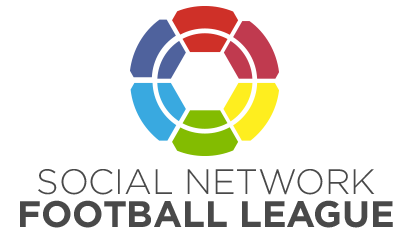
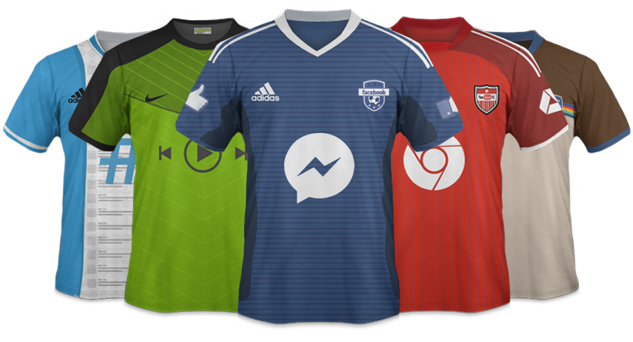

Fundación: 2004 - Presidente: Mark Zuckerberg - Sede: Silicon Valley, California - Aficionados: 1,366 Millones
Por su popularidad, el conjunto de Zuckerberg es considerado el más grande de la liga. Su afición supera los mil millones en todo el mundo, sin embargo, como todo equipo globalizado, en Estados Unidos cuenta con la mayor cantidad de seguidores. Si eres del resto del mundo, no te preocupes, representarás al 40% de fanáticos restantes.
Todos quieren jugar para Facebook pero pocos tienen ese placer. En palabras de su presidente, sólo ficharía a alguien para quien él mismo jugaría. Su filosofía no falla y sus números lo respaldan. El valor del equipo es de 80 mil millones de dólares.
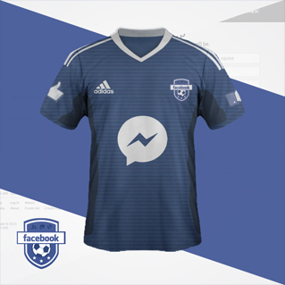
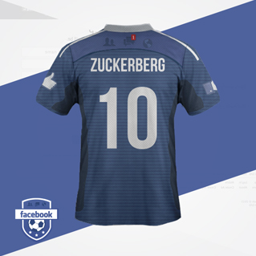

Fundación: 2008 - Presidente: Daniel Ek - Sede: Estocolmo, Suecia - Aficionados: 60 Millones
El equipo de los hipsters. Pagando una suscripción al equipo podrás decidir, vía online, a qué jugadores alinear en cada partido. Con un modelo completamente friendly y sus más de 40 millones de aficionados, Spotify empieza a reclamar terreno con los equipos grandes.
El conjunto cuenta con la peculiaridad de pagar a los futbolistas sólo por los minutos que están en el campo, un modelo innovador que les ha permitido fichar a grandes estrellas. No importa si son los más rápidos, los más altos o los mejores del mundo, lo que el equipo necesita, lo tiene.

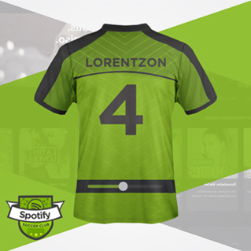

Fundación: 2005 - Presidente: Susan Wojcicki - Sede: San Bruno, California - Aficionados: 1 Billón
Uno de sus mayores logros fue haber conquistado al 78% de sus aficionados fuera de Estados Unidos, mientras el 22% restante se encuentra dentro de territorio norteamericano. La tarea no fue sencilla, sin embargo, fue posible gracias a que Google adquirió al equipo en 1,650 millones de dólares para poder ingresar al YouTube FC en las grandes ligas.
Con 2,000 millones de visitas, YouTube se posiciona con una de las mejores aficiones del mundo. Además, sus seguidores llegan a consumir 900 segundos diarios en información del equipo.
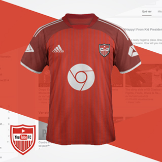

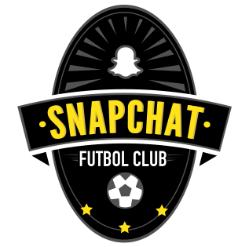
Fundación: 2011 - Presidente: Evan Spiegel - Sede: Venice, California - Aficionados: 100 Millones
El equipo más nuevo de la liga cuenta con el promedio de edad más bajo: 15 años. A pesar de su poco experiencia, Sanpchat Futbol Club ha tenido un crecimiento increíble en los últimos años.
Con un estilo de juego rápido y sencillo, Snapchat ha logrado cerrar grandes acuerdos comerciales que lo ubican como un equipo a seguir. Tiene grandes posibilidades de colarse en los primeros puestos. Las opulentas inversiones han hecho posible la llegada de nuevos jugadores que harán temblar a los “grandes” de la liga.
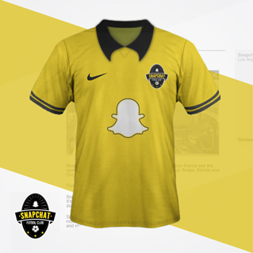
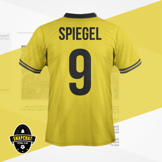

Fundación: 2006 - Presidente: Dick Costolo - Sede: San Francisco, California - Aficionados: 284 Millones
280 millones de aficionados alrededor de todo el mundo respaldan su grandeza, la mayoría de ellos ‘millennials’. En un solo día han alcanzado 340 millones de interacciones entre el equipo y su gente. Con su mascota Larry, ha logrado conquistar al público femenino, haciendo que represente un 60% de su fanaticada total.
Con un valor de 11,000 millones de dólares, Twitter F.C. ha arrasado a nivel mundial, logrando que gente como Lady Gaga, Katy Perry o Justin Bieber, sean los que más hablan del conjunto azul.
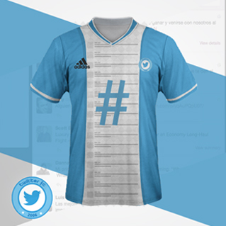
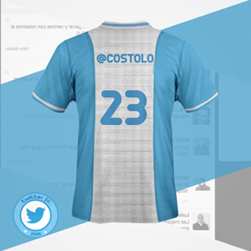

Fundación: 2010 - Presidente: Kevin Systrom - Sede: Menlo Park, California - Aficionados: 300 Millones
Un equipo de casa, que desde pequeños hicieron a los fanáticos amar sus colores. Su entrenador, Kevin Systrom, estuvo a nada de fichar por Facebook FC, pero rechazó la oferta. Así fue como fundó este renovado equipo que en apenas un año logró 1 millón de seguidores. Sus afición está compuesta, en su mayoría, por jóvenes y residentes fuera de Estados Unidos.
Siendo un equipo sin filtros y original, han logrado posicionarse entre los llamados ‘grandes’, desbancando a Twitter con mayor cantidad de fanáticos.
Los domingos juegan de local, pues es cuando sus seguidores tienen mayor tiempo para verlos. Dato curioso. La mayoría de sus aficionados son mujeres.
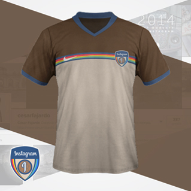
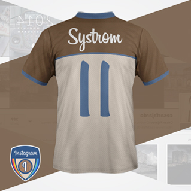

Fundación: 2009 - Presidente: Jan Koum - Sede: Mountain View, California - Aficionados: 600 Millones
Jamás podrá desprenderse de la sombra de su hermano mayor, Facebook FC. A pesar de ser un equipo del pueblo que cuenta con 400 millones de aficionados, cuando WhatsApp se lo propone, hace contrataciones que sorprenden a todos gracias a un presupuesto que ascienden los 20,000 millones de dólares.
El cuidado con sus seguidores es primordial, por ello, han empezado a notificar a sus fans si habrá partido, dónde, cuándo, dejándoles un doble check in en azul en sus teléfonos móviles.

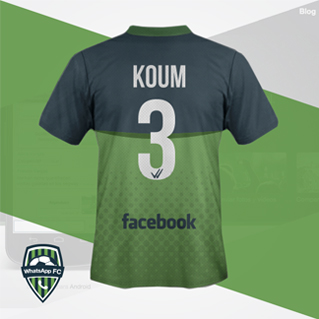
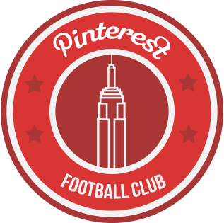
Fundación: 2010 - Presidente: Evan Spiegel - Sede: San Francisco, California - Aficionados: 70 Millones
Un conjunto relativamente nuevo con apenas cinco años en los terrenos de juego. Desde sus comienzos conquistó al público femenino, logrando así posicionarse entre los 50 equipos con mayor afición del mundo.
Un equipo localista, pero grande. 25.6 millones de aficionados llenan su estadio cada 15 días para poder disfrutar de los 500 mil jugadores con los que cuentan en su plantilla. ¿Cómo los consiguen? Gracias a los 338 millones de dólares que reciben a través de la iniciativa privada.
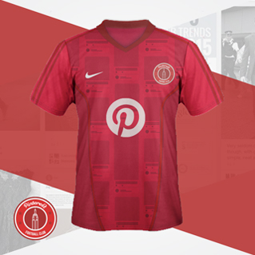
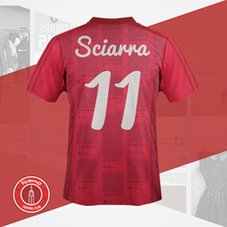